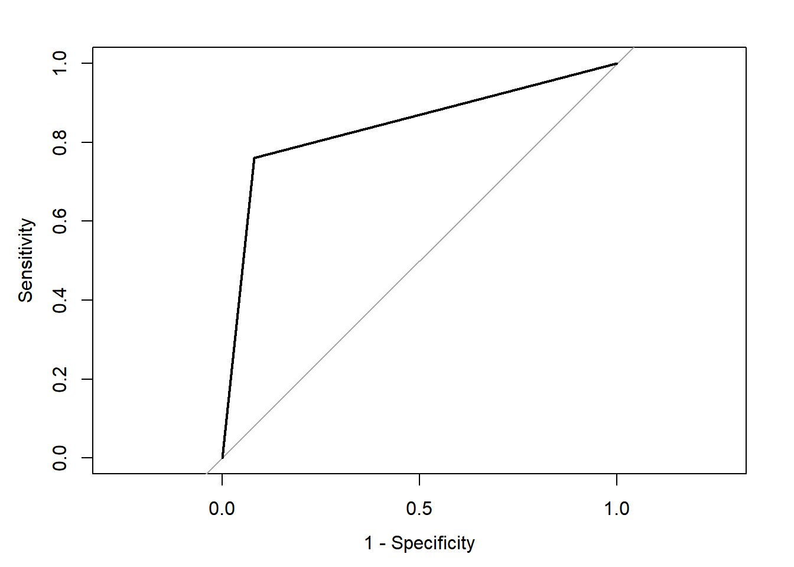
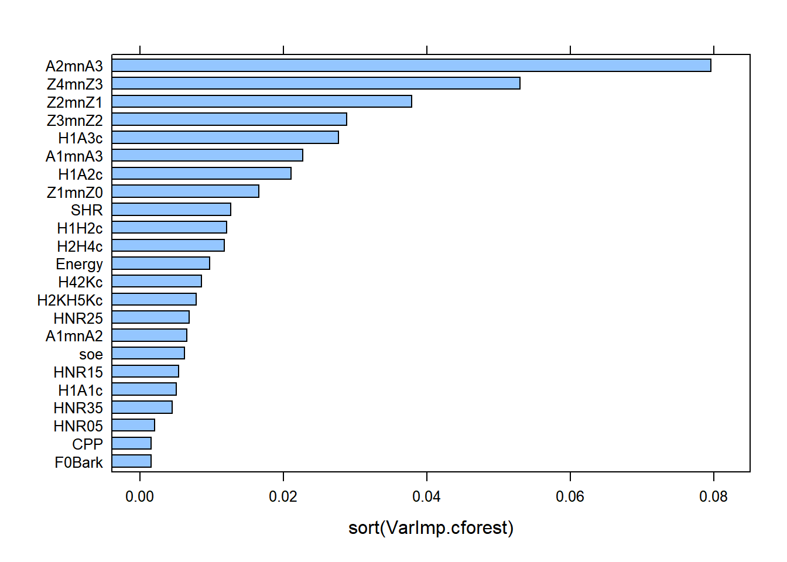
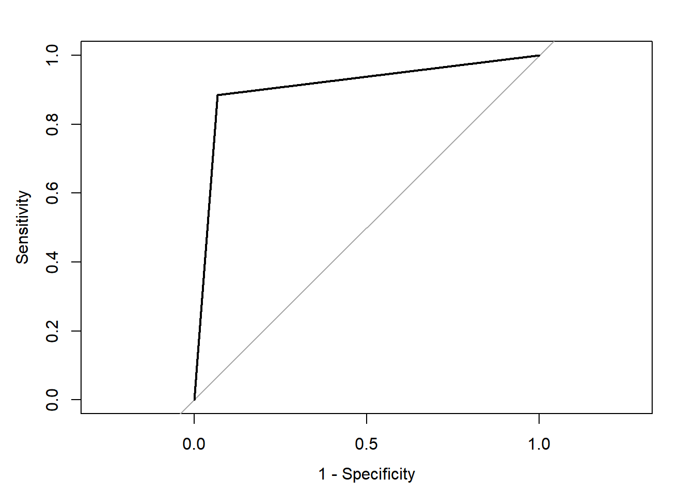
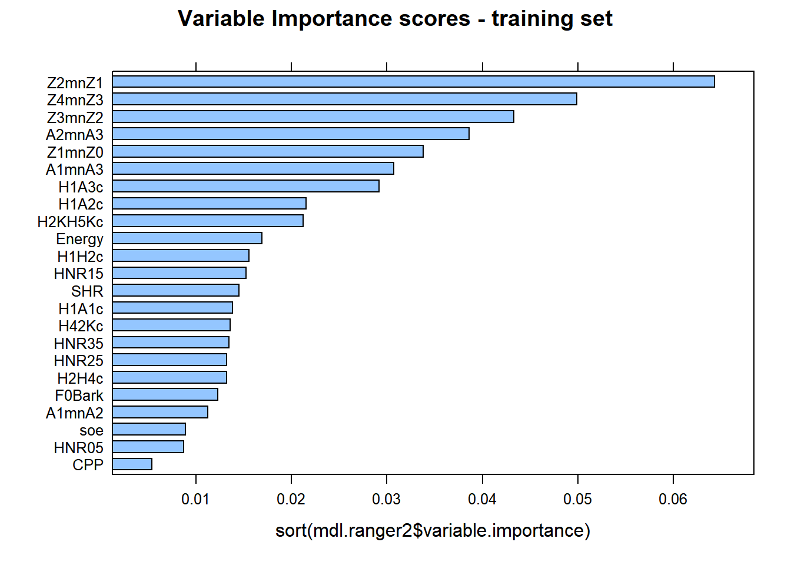
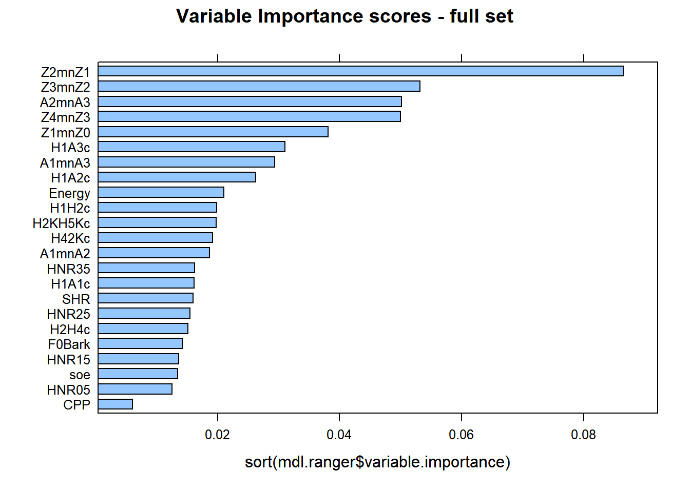
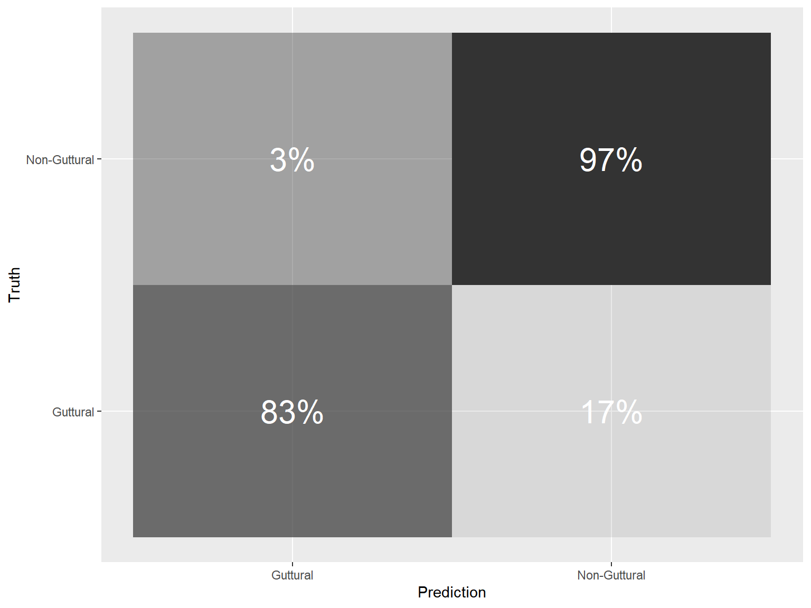
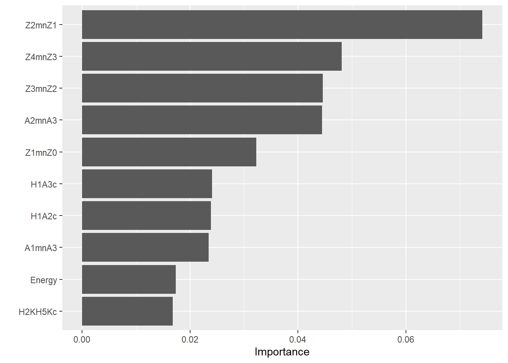
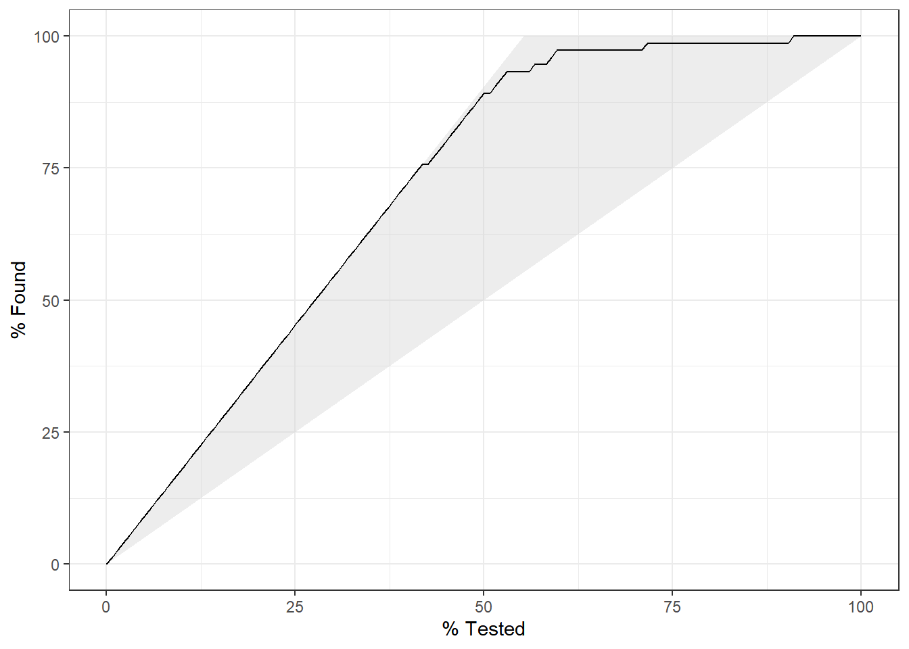
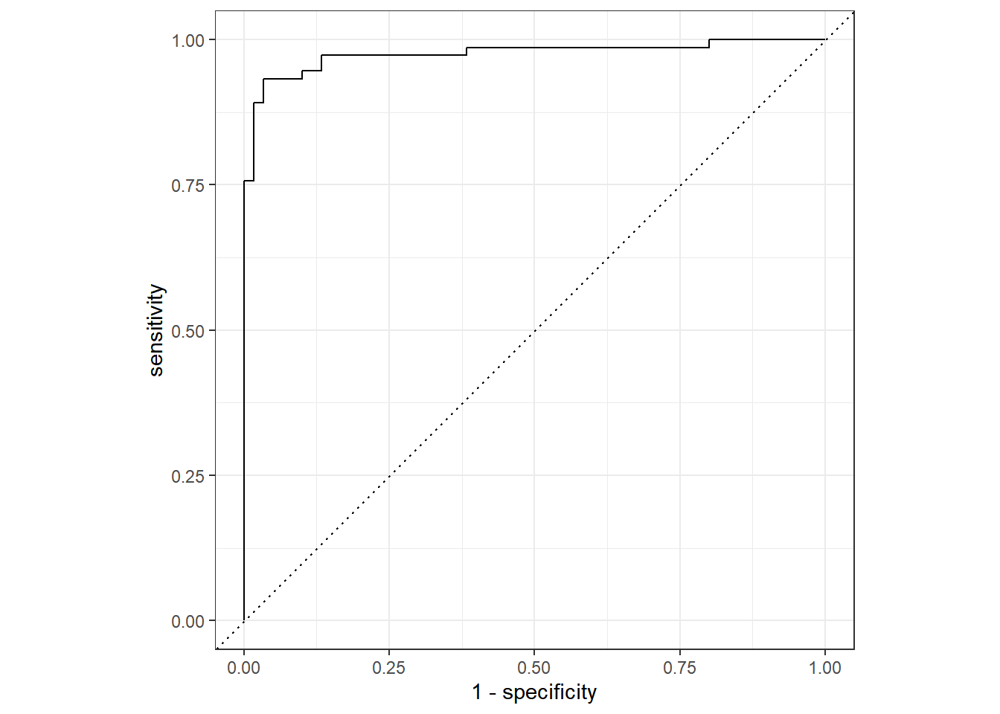

10.8 Random Forests
As their name indicate, a Random Forest is a forest of trees implemented through bagging ensemble algorithms. Each tree has multiple branches (nodes), and will provide predictions based on recursive partitioning of the data. Then using the predictions from the multiple grown trees, Random Forests will create averaged predictions and come up with prediction accuracy, etc.
There are multiple packages that one can use to grow Random Forests:
randomForest: The original implementation of Random Forests.partyandpartykit: using conditional inference trees as base learnersranger: a reimplementation of Random Forests; faster and more flexible than original implementation
The first implementation of Random Forests is widely used in research. One of the issues in this first implementation is that it favoured specific types of predictors (e.g., categorical predictors, predictors with multiple cut-offs, etc.). Random Forests grown via Conditional Inference Trees as implemented in party guard against this bias, but they are computationally demanding. Random Forests grown via permutation tests as implemented in ranger speed up the computations and can mimic the unbiased selection process.
10.8.1 Party
Random Forests grown via conditional inference trees, are different from the original implementation. They offer an unbiased selection process that guards against overfitting of the data. There are various points we need to consider in growing the forest, including number of trees and predictors to use each time. Let us run our first Random Forest via conditional inference trees. To make sure the code runs as fast as it can, we use a very low number of trees: only 100 It is well known that the more trees you grow, the more confidence you have in the results, as model estimation will be more stable. In this example, I would easily go with 500 trees..
10.8.1.1 Model specification
To grow the forest, we use the function cforest. We use all of the dataset for the moment. We need to specify a few options within controls:
ntree = 100= number of trees to grow. Default = 500.mtry = round(sqrt(23)): number of predictors to use each time. Default is 5, but specifying it is advised to account for the structure of the data
By default, cforest_unbiased has two additional important options that are used for an unbiased selection process. WARNING: you should not change these unless you know what you are doing. Also, by default, the data are split into a training and a testing set. The training is equal to 2/3s of the data; the testing is 1/3.
replace = FALSE= Use subsampling with or without replacement. Default isFALSE, i.e., use subsets of the data without replacing these.
fraction = 0.632= Use 63.2% of the data in each split.
10.8.1.2 Predictions
To obtain predictions from the model, we use the predict function and add OOB = TRUE. This uses the out-of-bag sample (i.e., 1/3 of the data).
set.seed(42)
pred.cforest <- predict(mdl.cforest, OOB = TRUE)
tbl.cforest <- table(pred.cforest, dfPharV2$context)
tbl.cforest##
## pred.cforest Non-Guttural Guttural
## Non-Guttural 204 43
## Guttural 18 137## PCC PCC.sd
## 1 0.8482587 0.01791612## specificity specificity.sd
## 1 0.7611111 0.03187099## sensitivity sensitivity.sd
## 1 0.9189189 0.01836125## Setting levels: control = Non-Guttural, case = Guttural## Setting direction: controls < cases##
## Call:
## roc.default(response = dfPharV2$context, predictor = as.numeric(pred.cforest))
##
## Data: as.numeric(pred.cforest) in 222 controls (dfPharV2$context Non-Guttural) < 180 cases (dfPharV2$context Guttural).
## Area under the curve: 0.84
Compared with the 82.8% classification accuracy we obtained using ctree using our full dataset above (model 1), here we obtain 84.8%; a 2% increase in classification accuracy. The specificity is slightly lower at 0.761 (at detecting the gutturals), but the sensitivity is higher at 0.919 (at detecting the non-gutturals). The ROC curve shows the relationship between the two with an AUC of 0.84.
We could test whether there is statistically significant difference between our ctree and cforest models. Using the ROC curves, the roc.test conducts a non-parametric Z test of significance on the correlated ROC curves. The results show a statistically significant improvement using the cforest model. This is normal because we are growing 100 different trees, with random selection of both predictors and samples and provide an averaged prediction.
##
## DeLong's test for two correlated ROC curves
##
## data: roc.ctree and roc.cforest
## Z = -0.7417, p-value = 0.4583
## alternative hypothesis: true difference in AUC is not equal to 0
## 95 percent confidence interval:
## -0.06180273 0.02786879
## sample estimates:
## AUC of roc1 AUC of roc2
## 0.823048 0.840015##
## DeLong's test for two correlated ROC curves
##
## data: roc.ctree1 and roc.cforest
## Z = -4.2372, p-value = 2.264e-05
## alternative hypothesis: true difference in AUC is not equal to 0
## 95 percent confidence interval:
## -0.14296247 -0.05253302
## sample estimates:
## AUC of roc1 AUC of roc2
## 0.7422673 0.840015010.8.1.3 Variable Importance Scores
One important feature in ctree was to show which predictor was used first is splitting the data, which was then followed by the other predictors. We use a similar functionality with cforest to obtain variable importance scores to pinpoint strong and weak predictors.
There are two ways to obtain this:
- Simple permutation tests (conditional = FALSE)
- Conditional permutation tests (conditional = TRUE)
The former is generally comparable across packages and provides a normal permutation test; the latter runs a permutation test on a grid defined by the correlation matrix and corrects for possible collinearity. This is similar to a regression analysis, but looks at both main effects and interactions.
You could use the normal varimp as implemented in party. This uses mean decrease in accuracy scores. We will use variable importance scores via an AUC based permutation tests as this uses both accuracy and errors in the model, using varImpAUC from the varImp package.
DANGER ZONE: using conditional permutation test requires a lot of RAMs, unless you have access to a cluster, and/or a lot of RAMs, do not attempt running it. We will run the non-conditional version here for demonstration.
10.8.1.3.1 Non-conditional permutation tests
set.seed(42)
VarImp.cforest <- varImp::varImpAUC(mdl.cforest, conditional = FALSE)
lattice::barchart(sort(VarImp.cforest))
The Variable Importance Scores via non-conditional permutation tests showed that A2*-A3* (i.e., energy in mid-high frequencies around F2 and F3) is the most important variable at explaining the difference between gutturals and non-gutturals, followed by Z4-Z3 (pharyngeal constriction), H1*-A3* (energy in mid-high frequency component), Z2-Z1 (degree of compactness), Z3-Z2 (spectral divergence), H1*-A2 (energy in mid frequency component) and Z1-Z0 (degree of openness). All other predictors contribute to the contrast but to varying degrees (from H1*-H2* to H1*-A1*). The last 5 predictors are the least important and and the CPP has a 0 mean decrease in accuracy and can even be ignored.
10.8.1.4 Conclusion
The party package is powerful at growing Random Forests via conditional Inference trees, but is computationally prohibitive when increasing number of trees and using conditional permutation tests of variable importance scores. We look next at the package ranger due to its speed in computation and flexibility.
10.8.2 Ranger
10.8.2.1 Declare parallel computing
We start by declaring parallel computing on your devices. This is essential to run these complex computations. The code below is designed to only use 1 core from your machine (and it is not too complex), but if you try to increase the complexity of your computations, you will need parallel computing.
set.seed(42)
#Declare parallel computing
ncores <- availableCores()
cat(paste0("Number of cores available for model calculations set to ", ncores, "."))## Number of cores available for model calculations set to 12.## Socket cluster with 12 nodes where 12 nodes are on host 'localhost' (R version 4.5.0 (2025-04-11 ucrt), platform x86_64-w64-mingw32)## system
## 12## below we register our random number generator. This will mostly be used within the tidymodels below. This allows replication of the results
## below to suppress any warnings from doFuture
options(doFuture.rng.onMisuse = "ignore")The ranger package proposes a reimplementation of the original Random Forests algorithms, written in C++ and allows for parallel computing. It offers more flexibility in terms of model specification.
10.8.2.2 Model specification
In the model below specification below, there are already a few options we are familiar with, with additional ones described below:
num.tree= Number of trees to grow. We use the default valuemtry= Number of predictors to use. Default =floor(sqrt(Variables)). For compatibility withparty, we useround(sqrt(23))replace = FALSE= Use subsampling with or without replacement. Defaultreplace = TRUE, i.e., is with replacement.sample.fraction = 0.632= Use 63.2% of the data in each split. Default is full dataset, i.e.,sample.fraction = 1importance = "permutation"= Compute variable importance scores via permutation testsscale.permutation.importance = FALSE= whether to scale variable importance scores to be out of 100%. Default is TRUE. This is likely to introduce biases in variable importance estimation.splitrule = "extratrees"= rule used for splitting trees.num.threads= allow for parallel computing. Here we only specify 1 thread, but can use all thread on your computer (or cluster).
We use options 2-7 to make sure we have an unbiased selection process with ranger. You can try on your own running the model below by using the defaults to see how the rate of classification increases more, but with the caveat that it has a biased selection process.
set.seed(42)
mdl.ranger <- dfPharV2 %>%
ranger(context ~ ., data = ., num.trees = 500, mtry = round(sqrt(23)),
replace = FALSE, sample.fraction = 0.632,
importance = "permutation", scale.permutation.importance = FALSE,
splitrule = "extratrees", num.threads = ncores)
mdl.ranger## Ranger result
##
## Call:
## ranger(context ~ ., data = ., num.trees = 500, mtry = round(sqrt(23)), replace = FALSE, sample.fraction = 0.632, importance = "permutation", scale.permutation.importance = FALSE, splitrule = "extratrees", num.threads = ncores)
##
## Type: Classification
## Number of trees: 500
## Sample size: 402
## Number of independent variables: 23
## Mtry: 5
## Target node size: 1
## Variable importance mode: permutation
## Splitrule: extratrees
## Number of random splits: 1
## OOB prediction error: 7.46 %Results of our Random Forest shows an OOB (Out-Of-Bag) error rate of 7.46%, i.e., an accuracy of 92.54%.
10.8.2.3 Going further
Unfortunately, when growing a tree with ranger, we cannot use predictions from the OOB sample as there are no comparable options to do so on the predictions. We need to hard-code this. We split the data into a training and a testing sets. The training will be on 2/3s of the data; the testing is on the remaining 1/3.
10.8.2.3.2 Model specification
We use the same model specification as above, except from using the training set and saving the forest (with write.forest = TRUE).
set.seed(42)
mdl.ranger2 <- gutt.train %>%
ranger(context ~ ., data = ., num.trees = 500, mtry = round(sqrt(23)),
replace = FALSE, sample.fraction = 0.632,
importance = "permutation", scale.permutation.importance = FALSE,
splitrule = "extratrees", num.threads = ncores, write.forest = TRUE)
mdl.ranger2## Ranger result
##
## Call:
## ranger(context ~ ., data = ., num.trees = 500, mtry = round(sqrt(23)), replace = FALSE, sample.fraction = 0.632, importance = "permutation", scale.permutation.importance = FALSE, splitrule = "extratrees", num.threads = ncores, write.forest = TRUE)
##
## Type: Classification
## Number of trees: 500
## Sample size: 268
## Number of independent variables: 23
## Mtry: 5
## Target node size: 1
## Variable importance mode: permutation
## Splitrule: extratrees
## Number of random splits: 1
## OOB prediction error: 10.82 %With the training set, we have an OOB error rate of 10.82%; i.e., an accuracy rate of 89.18%.
10.8.2.3.3 Predictions
For the predictions, we use the testing set as a validation set. This is to be considered as a true reflection of the model. This is unseen data not used in the training set.
set.seed(42)
pred.ranger2 <- predict(mdl.ranger2, data = gutt.test)
tbl.ranger2 <- table(pred.ranger2$predictions, gutt.test$context)
tbl.ranger2##
## Non-Guttural Guttural
## Non-Guttural 68 7
## Guttural 5 54## PCC PCC.sd
## 1 0.9104478 0.02475939## specificity specificity.sd
## 1 0.8852459 0.04114721## sensitivity sensitivity.sd
## 1 0.9315068 0.02976805## Setting levels: control = Non-Guttural, case = Guttural## Setting direction: controls < cases##
## Call:
## roc.default(response = gutt.test$context, predictor = as.numeric(pred.ranger2$predictions))
##
## Data: as.numeric(pred.ranger2$predictions) in 73 controls (gutt.test$context Non-Guttural) < 61 cases (gutt.test$context Guttural).
## Area under the curve: 0.9084
The classification rate based on the testing set is 91.1%. This is comparable to the one we obtained with cforest. The changes in the settings allow for similarities in the predictions obtained from both party and ranger.
10.8.2.3.4 Variable Importance Scores
10.8.2.3.4.1 Default
For the variable importance scores, we obtain them from either the training set or the full model above.
set.seed(42)
lattice::barchart(sort(mdl.ranger2$variable.importance), main = "Variable Importance scores - training set")
lattice::barchart(sort(mdl.ranger$variable.importance), main = "Variable Importance scores - full set")
There are similarities between cforest and ranger, with minor differences. Z2-Z1 is the best predictor at explaining the differences between gutturals and non-gutturals with ranger followed by Z3-Z2 and then A2*-A3*, (reverse with cforest!). The order of the additional predictors is sightly different between the two models. This is expected as the cforest model only used 100 trees, whereas the ranger model used 500 trees.
A clear difference between the packages party and ranger is that the former allows for conditional permutation tests for variable importance scores; this is absent from ranger. However, there is a debate in the literature on whether correlated data are harmful within Random Forests. It is clear that how Random Forests work, i.e., the randomness in the selection process in number of data points, predictors, splitting rules, etc. allow the trees to be decorrelated from each other. Hence, the conditional permutation tests may not be required. But what they offer is to condition variable importance scores on each other (based on correlation tests) to mimic what a multiple regression analysis does (but without suffering from suppression!). Strong predictors will show major contribution, while weak ones will be squashed giving them extremely low (or even negative) scores. Within ranger, it is possible to evaluate this by estimating p values associated with each variable importance.We use the altman method. See documentation for more details.
DANGER ZONE: This requires heavy computations. Use with all cores on your machine or in the cluster. Recommendations are to use a minimum of 500 permutations or more, i.e., num.permutations = 500; ideally 1000 or more permutations are needed to get an accurate picture…
10.8.2.3.4.2 With p values
set.seed(42)
VarImp.pval <- importance_pvalues(mdl.ranger2, method = "altmann",
num.permutations = 500,
formula = context ~ ., data = gutt.train,
num.threads = ncores)
VarImp.pval## importance pvalue
## CPP 0.005373737 0.035928144
## Energy 0.016929293 0.001996008
## H1A1c 0.013838384 0.001996008
## H1A2c 0.021535354 0.001996008
## H1A3c 0.029151515 0.001996008
## H1H2c 0.015535354 0.001996008
## H2H4c 0.013191919 0.001996008
## H2KH5Kc 0.021232323 0.003992016
## H42Kc 0.013595960 0.003992016
## HNR05 0.008707071 0.005988024
## HNR15 0.015232323 0.001996008
## HNR25 0.013212121 0.003992016
## HNR35 0.013494949 0.001996008
## SHR 0.014525253 0.003992016
## soe 0.008888889 0.019960080
## Z1mnZ0 0.033777778 0.001996008
## Z2mnZ1 0.064323232 0.001996008
## Z3mnZ2 0.043313131 0.001996008
## Z4mnZ3 0.049898990 0.001996008
## F0Bark 0.012323232 0.003992016
## A1mnA2 0.011232323 0.001996008
## A1mnA3 0.030747475 0.001996008
## A2mnA3 0.038585859 0.001996008Of course, the output above shows variable p values. The lowest is at 0.009 for all predictors; one at 0.09 for CPP. Recall that CPP received the lowest variable importance score within ranger and cforest. If you increase permutations to 200 or 500, you will get more confidence in your results and can report the p values
In the next part, we look at the tidymodels and introduce their philosophy.
10.8.3 Random forests with Tidymodels
The tidymodels are a bundle of packages used to streamline and simplify the use of machine learning. The tidymodels are not restricted to Random Forests, and you can even use them to run simple linear models, logistic regressions, PCA, Random Forests, Deep Learning, etc.
The tidymodels’ philosophy is to separate data processing on the training and testing sets, and use of a workflow. Below, is an full example of how one can run Random Forests with via ranger using the tidymodels.
10.8.3.1 Training and testing sets
We start by creating a training and a testing set using the function initial_split. Using strata = context allows the model to split the data taking into account its structure and splits the data according to proportions of each group.
set.seed(42)
train_test_split <-
initial_split(
data = dfPharV2,
strata = "context",
prop = 0.667)
train_test_split## <Training/Testing/Total>
## <268/134/402>10.8.3.2 Set for cross-validation
We can (if we want to), create a 10-folds cross-validation on the training set. This allows to fine tune the training by obtaining the forest with the highest accuracy. This is a clear difference with ranger. While it is not impossible to hard code that, tidymodels simplify it for us!!
10.8.3.3 Model Specification
Within the model specification, we need to specify multiple options:
- A
recipe: This is the recipe and is related to any data processing one wants to apply on the data. - An
engine: We need to specify theengineto use. Here we want to run a Random Forest. - A
tuning: Here we can tune our engine - A
workflow: here we specify the various steps of the workflow
10.8.3.3.1 Recipe
When defining the recipe, you need to think of the type of “transformations” you will apply to your data.
- Z-scoring is the first thing that comes to mind. When you z-score the data, you are allowing all strong and weak predictors to be considered equally by the model. This is important as some of our predictors have very large differences related to the levels of context and have different measurement scales. We could have applied it above, but we need to make sure to apply it separately on both training and testing sets (otherwise, our model suffers from data leakage)
- If you have any missing data, you can use central imputations to fill in missing data (random forests do not like missing data, though they can work with them).
- You can apply PCA on all your predictors to remove collinearity before running random forests. This is a great option to consider, but adds more complexity to your model.
4.Finally, if you have categorical predictors, you can transform them into dummy variables using
step_dummy(): 1s and 2s for binary; or use one-hot-encodingstep_dummy(predictor, one_hot = TRUE)
See documentations of tidymodels for what you can apply!!
set.seed(42)
recipe <-
train_tbl %>%
recipe(context ~ .) %>%
step_center(all_predictors(), -all_outcomes()) %>%
step_scale(all_predictors(), -all_outcomes())
recipePrep <- recipe %>%
prep()
trainData_baked <- bake(recipePrep, new_data = train_tbl) ## convert to the train data to the newly imputed data
trainData_baked## # A tibble: 268 × 24
## CPP Energy H1A1c H1A2c H1A3c H1H2c H2H4c H2KH5Kc H42Kc HNR05
## <dbl> <dbl> <dbl> <dbl> <dbl> <dbl> <dbl> <dbl> <dbl> <dbl>
## 1 -1.31 3.75 -0.317 0.248 -1.02 -0.927 -0.237 0.0286 0.0460 -1.63
## 2 -0.269 3.77 -0.699 -0.367 -1.48 -0.855 -0.440 -0.600 0.614 -0.582
## 3 -3.16 0.681 -0.0470 0.598 -0.352 -0.886 0.138 -0.408 0.707 -2.21
## 4 -1.28 2.49 -0.154 0.816 -1.77 -0.609 -0.284 0.491 0.420 -1.35
## 5 -0.124 2.13 -0.437 0.0475 -1.62 -0.728 -0.140 0.435 0.604 -0.773
## 6 -0.833 1.87 -0.0359 0.322 -1.40 -0.518 0.140 -0.119 0.567 -1.61
## 7 1.01 4.37 -0.829 0.124 -1.03 -0.993 -0.00285 0.249 -0.145 -0.788
## 8 0.234 1.80 -0.729 0.266 -0.456 -0.888 -0.600 0.0338 0.779 -0.379
## 9 -1.30 0.693 -0.169 0.560 0.702 -0.868 0.0419 -0.00233 0.759 -1.37
## 10 -1.06 2.63 -0.266 0.147 1.78 -0.682 -0.336 -1.40 1.06 -0.972
## # ℹ 258 more rows
## # ℹ 14 more variables: HNR15 <dbl>, HNR25 <dbl>, HNR35 <dbl>, SHR <dbl>,
## # soe <dbl>, Z1mnZ0 <dbl>, Z2mnZ1 <dbl>, Z3mnZ2 <dbl>, Z4mnZ3 <dbl>,
## # F0Bark <dbl>, A1mnA2 <dbl>, A1mnA3 <dbl>, A2mnA3 <dbl>, context <fct>Once we have prepared the recipe, we can bake it to see the changes applied to it.
10.8.3.3.2 Setting the engine
We set the engine here as a rand_forest. We specify a classification mode. Then, we set an engine with engine specific parameters.
set.seed(42)
engine_tidym <- rand_forest(
mode = "classification",
engine = "ranger",
mtry %>% tune(),
trees %>% tune(),
min_n = 1
) %>%
set_engine("ranger", importance = "permutation", sample.fraction = 0.632,
replace = FALSE, write.forest = T, splitrule = "extratrees",
scale.permutation.importance = FALSE) ## we add engine specific settings10.8.3.3.3 Settings for tuning
If we want to tune the model, then uncomment the lines below. It is important to use an mtry that hovers around the round(sqrt(Variables)). If you use all available variables, then your forest is biased as it is able to see all predictors. For number of trees, low numbers are not great, as you can easily underfit the data and not produce meaningful results. Large numbers are fine and Random Forests do not overfit (in theory).
The full dataset has around 2000 observations, and 23 predictors (well even more, but let’s ignore it for the moment). I tuned mtry to be between 4 and 6, and trees to be between 1000 and 5000 in a 30 step increment. In total, with a 10-folds cross validation, I grew 30 random forests on each fold for a total of 300 Random Forests on the training set!!! This of course will take a loooooong time to compute on your computer if using one thread. So use parallel computing or a cluster. When running in the cluster with 20 cores, each with 11GB RAMs, and it took around 260.442 seconds to run with 220GB RAMS! Of course, with smaller RAMs and number of cores, the code will still run but will take longer.
10.8.3.3.5 Tuning and running model
Here we run the model starting with the workflow, the cross-validation sample, the tuning parameters and asking for specific metrics.
The model below will do the following: 1. Use a 10-folds cross validation on the training test 2. Tune the hyper-parameters to reach the model with the best predictions 3. Within each fold, we grow 30 random forests; we have a total of 300 Random Forests, and we use an ROC-AUC based search for the best performing model
Of course, you could use a larger size to grow more trees, with this will take longer to run!
The model will run for about 2-3 minutes with an 8 cores machine and 32GB of RAMs. For demonstration purposes, the tuning of number of trees is restricted to between 1000 and 2000 trees. This can of course be increased to 5000 trees (or more) depending on the size of the dataset
set.seed(42)
system.time(grid_tidym <-
tune_grid(wkfl_tidym,
resamples = train_cv,
grid = gridy_tidym,
metrics = metric_set(accuracy, roc_auc, sens, spec,f_meas, precision, recall),
control = control_grid(save_pred = TRUE, parallel_over = NULL))
)## user system elapsed
## 21.03 7.78 147.83## # Tuning results
## # 10-fold cross-validation using stratification
## # A tibble: 10 × 5
## splits id .metrics .notes .predictions
## <list> <chr> <list> <list> <list>
## 1 <split [241/27]> Fold01 <tibble [210 × 6]> <tibble [0 × 3]> <tibble>
## 2 <split [241/27]> Fold02 <tibble [210 × 6]> <tibble [0 × 3]> <tibble>
## 3 <split [241/27]> Fold03 <tibble [210 × 6]> <tibble [0 × 3]> <tibble>
## 4 <split [241/27]> Fold04 <tibble [210 × 6]> <tibble [0 × 3]> <tibble>
## 5 <split [241/27]> Fold05 <tibble [210 × 6]> <tibble [0 × 3]> <tibble>
## 6 <split [241/27]> Fold06 <tibble [210 × 6]> <tibble [0 × 3]> <tibble>
## 7 <split [241/27]> Fold07 <tibble [210 × 6]> <tibble [0 × 3]> <tibble>
## 8 <split [241/27]> Fold08 <tibble [210 × 6]> <tibble [0 × 3]> <tibble>
## 9 <split [242/26]> Fold09 <tibble [210 × 6]> <tibble [0 × 3]> <tibble>
## 10 <split [242/26]> Fold10 <tibble [210 × 6]> <tibble [0 × 3]> <tibble>10.8.3.3.6 Finalise model
We obtain the best performing model from cross-validation, then finalise the workflow by predicting the results on the testing set and obtain the results of the best performing model
## # A tibble: 210 × 8
## mtry trees .metric .estimator mean n std_err .config
## <int> <int> <chr> <chr> <dbl> <int> <dbl> <chr>
## 1 4 1298 accuracy binary 0.880 10 0.0257 Preprocessor1_Model01
## 2 4 1298 f_meas binary 0.898 10 0.0214 Preprocessor1_Model01
## 3 4 1298 precision binary 0.856 10 0.0279 Preprocessor1_Model01
## 4 4 1298 recall binary 0.951 10 0.0238 Preprocessor1_Model01
## 5 4 1298 roc_auc binary 0.964 10 0.0106 Preprocessor1_Model01
## 6 4 1298 sens binary 0.951 10 0.0238 Preprocessor1_Model01
## 7 4 1298 spec binary 0.792 10 0.0452 Preprocessor1_Model01
## 8 4 1910 accuracy binary 0.876 10 0.0281 Preprocessor1_Model02
## 9 4 1910 f_meas binary 0.896 10 0.0226 Preprocessor1_Model02
## 10 4 1910 precision binary 0.853 10 0.0301 Preprocessor1_Model02
## # ℹ 200 more rows## # A tibble: 1 × 3
## mtry trees .config
## <int> <int> <chr>
## 1 6 1354 Preprocessor1_Model1710.8.3.4 Results
For the results, we can obtain various metrics on the training and testing sets.
10.8.3.4.1 Cross-validation on training set
10.8.3.4.2 Predictions testing set
10.8.3.4.3 Confusion Matrix training set
wkfl_tidym_final$.predictions[[1]] %>%
conf_mat(context, .pred_class) %>%
pluck(1) %>%
as_tibble() %>%
group_by(Truth) %>% ## group by Truth to compute percentages
mutate(prop =percent(prop.table(n))) %>% ## calculate percentages row-wise
ggplot(aes(Prediction, Truth, alpha = prop)) +
geom_tile(show.legend = FALSE) +
geom_text(aes(label = prop), colour = "white", alpha = 1, size = 8)
10.8.3.4.4 Variable Importance
10.8.3.4.4.1 Best 10
## Warning: `pull_workflow_fit()` was deprecated in workflows 0.2.3.
## ℹ Please use `extract_fit_parsnip()` instead.
## This warning is displayed once every 8 hours.
## Call `lifecycle::last_lifecycle_warnings()` to see where this warning was generated.
10.8.3.4.4.3 P-values computed with permutation importance (PIMP)
testData_baked <- bake(recipePrep, new_data = test_tbl) ## convert the test data to the newly imputed data
set.seed(42)
system.time(VarImp.pval <- wkfl_tidym_final %>% extract_fit_engine() %>% importance_pvalues(method = "altmann", formula = context ~., data = testData_baked, num.permutations = 500, num.threads = ncores))## user system elapsed
## 211.23 141.26 69.39VarImp.pvaldf <- VarImp.pval %>%
as.data.frame() %>%
rownames_to_column(var = "correlate") %>%
arrange(pvalue)
VarImp.pvaldf## correlate importance pvalue
## 1 H1A2c 0.023872402 0.001996008
## 2 H1A3c 0.024066365 0.001996008
## 3 H1H2c 0.015770706 0.001996008
## 4 HNR15 0.011190188 0.001996008
## 5 Z1mnZ0 0.032294884 0.001996008
## 6 Z2mnZ1 0.074190949 0.001996008
## 7 Z3mnZ2 0.044619011 0.001996008
## 8 Z4mnZ3 0.048110350 0.001996008
## 9 F0Bark 0.014450263 0.001996008
## 10 A2mnA3 0.044447428 0.001996008
## 11 H1A1c 0.012935858 0.003992016
## 12 H2KH5Kc 0.016762902 0.003992016
## 13 A1mnA2 0.014897871 0.003992016
## 14 A1mnA3 0.023424794 0.003992016
## 15 Energy 0.017352252 0.005988024
## 16 H42Kc 0.015076914 0.007984032
## 17 HNR25 0.009511660 0.007984032
## 18 HNR35 0.009638482 0.009980040
## 19 H2H4c 0.013502827 0.011976048
## 20 soe 0.011697477 0.011976048
## 21 SHR 0.010541158 0.015968064
## 22 HNR05 0.006162064 0.043912176
## 23 CPP 0.005035585 0.07385229510.8.3.4.5 Gains curves
This is an interesting features that show how much is gained when looking at various portions of the data. We see a gradual increase in the values. When 50% of the data were tested, around 83% of the results within the non-guttural class were already identified. The more testing was performed, the more confidence in the results there are and then when 84.96% of the data were tested, 100% of the cases were found.

10.8.3.4.6 ROC Curves

This is the end of this chapter introducing Random Forests. We have seen how to run them using party, ranger and tidymodels. The latter is a great package that allows to streamline the process of running machine learning models. It is not restricted to Random Forests, and can be used for any type of model!